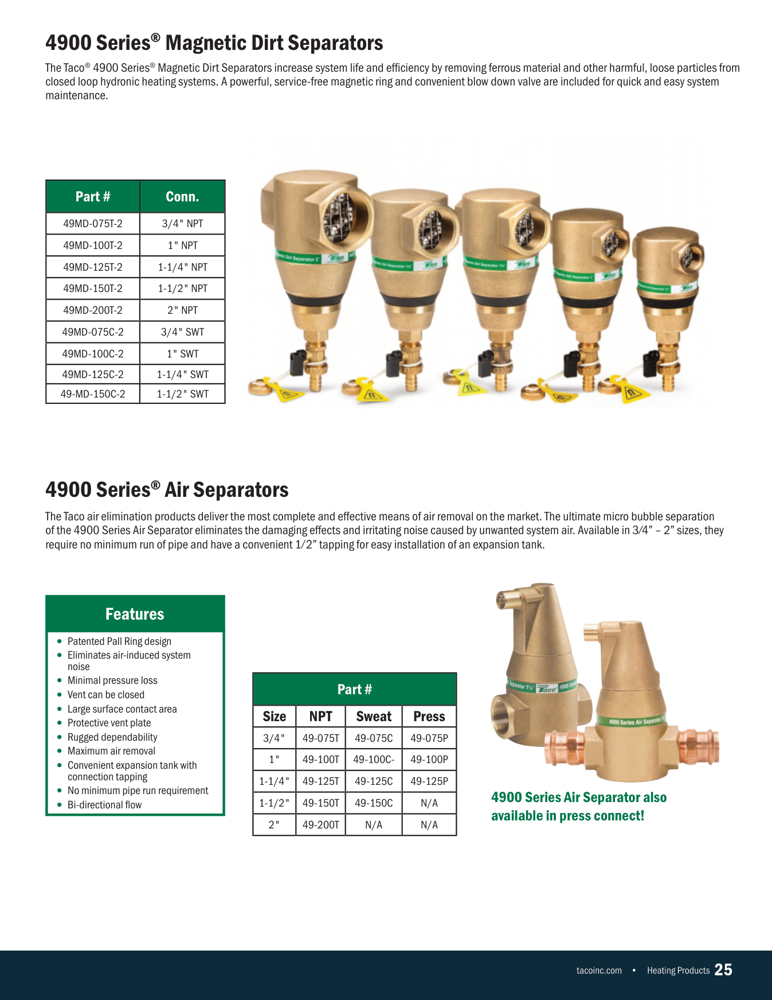

Taco 4900 Series air separator, 1". One separator body; the variants differ only by the inlet/outlet connection type. Build the body once and change only the end connections.
3 variants Catalog p.25 1"
This is our current VNTANA asset for the lead variant. Use it as the geometry, scale, and material reference for your rebuild. Below it is the source CAD download and the full variant list.
Work from the Optimized GLB in the shared VNTANA collection, not the STEP. VNTANA has already converted each CAD (Convert Only, Pivot None, Draco off), so the GLB is a clean, straight conversion of the source geometry.
Your scope on the GLB: open it in Blender, UV map, minor mesh cleanup, then create and apply the materials. That is the whole job. Do not rebuild or re-model from the STEP.
| SKU | Size | Connection | VNTANA reference |
|---|---|---|---|
| 49-100T | 1" | Threaded (NPT) | View 3D Platform ↗ |
| 49-100C | 1" | Sweat (solder) | View 3D Platform ↗ |
| 49-100P | 1" | Press connect | View 3D Platform ↗ |
Catalog specifications (page 25) and the reference photography. Match the physical proportions and finishes to these, not to your own interpretation.
Additional product photography, including back and detail views, is on Taco's own product page. Use it as supporting reference alongside the catalog. Where a web photo conflicts with the catalog, the catalog is the source of truth.

| Component | Material |
|---|---|
| Body | Steel |
| Separator element | Pall-ring internals (keep, serviceable internal) |
| Magnetic ring | Magnet (dirt-separator models) |
| Vent / blow-down valve | Brass |
| Connections | Threaded steel (T) / bronze sweat (C) / copper press (P) |
When the family is built, self-QA against this checklist first, then upload to the VNTANA platform as a Draft and notify VNTANA for review. Do not mark anything final. VNTANA does the final approval.
Use VNTANA’s shared toolkit so cameras, lighting, and the render environment are identical on every asset.